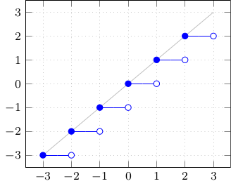
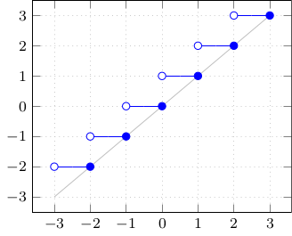
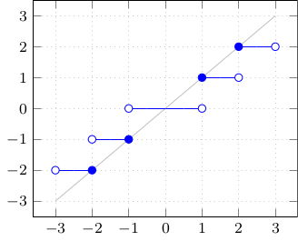
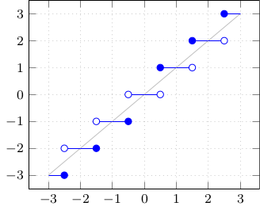
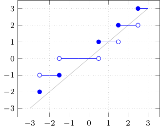
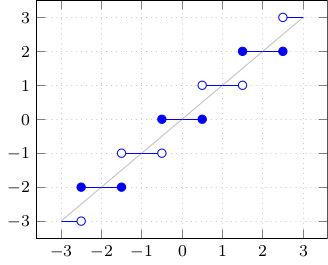

Tobias Hoffmann
C++ User Treffen Aachen, 2019-07-11
Introduction
- Aim: Overview/Comparison of rounding functions
- C/C++ are mostly the same
- Rounding mode independent:
floor*, ceil*, ...
- Rounding mode dependent:
rint*, nearbyint*, ...
Floating Point Environment
<fenv.h> / <cfenv>
fesetround(FE_TONEAREST), fegetround()
fetestexcept(mask), feclearexcept(mask)
FE_INVALID, FE_INEXACT, FE_ALL_EXCEPT, ...
Floor

C:
double floor(double);
float floorf(float);
long double floorl(long double);
C++: T={float, double, long double}
T std::floor(T);
C++11:
float std::floorf(float);
long double std::floorl(long double);
double std::floor(IntegralType);
(long int)floor(x); / floorf / ...
- Corresponding rounding mode:
FE_DOWNWARD
Ceil

C:
double ceil(double);
float ceilf(float);
long double ceill(long double);
C++: T={float, double, long double}
T std::ceil(T);
C++11:
float std::ceilf(float);
long double std::ceill(long double);
double std::ceil(IntegralType);
(long int)ceil(x); / ...
- Corresponding rounding mode:
FE_UPWARD
Truncate / Round toward zero

C:
double trunc(double);
float truncf(float);
long double truncl(long double);
C++11: T={float, double, long double}
T std::trunc(T);
float std::truncf(float);
long double std::truncl(long double);
double std::trunc(IntegralType);
(long int)x;
- Corresponding rounding mode:
FE_TOWARDZERO
Round to nearest,
halfway cases away from zero

C:
double round(double); / float roundf(float); / long double roundl(long double);
long int lround(double); / lroundf / lroundl
long long int llround(double); / ...
C++11: T={float, double, long double}
T std::round(T);
long std::lround(T); / long long std::llround(T);
double std::round(IntegralType); / long std::lround(IntegralType) / std::llround
- No (standardized) corresponding rounding mode!
Round to nearest,
halfway cases away from zero
- How NOT to do it -

(long int)(x + 0.5);
- Problem 1: < 0
- Problem 2: ≥ 223 (float)
Round to nearest,
halfway cases to even

Rounding mode dependent methods (C / C++11) with default mode:
double rint(double); / rintf / rintl
T rint(T / IntegralType);
long lrint(T / IntegralType); / llrint
T nearbyint(T / IntegralType);
Less commonly available (C only):
double roundeven(double); / roundevenf / roundevenl
(long int)roundeven(x); / ...
- Corresponding rounding mode:
FE_TOWARDZERO
Round to nearest,
halfway cases upward
(long int)floor(x + 0.5); /
(long int)floorf(x + 0.5f);
- Has most problems of round-nearest by cast.
- Better: Use "halfway cases to even"!
Rounding mode dependent
C / C++11:
rint* - does not raise FE_INEXACT
nearbyint* - raises FE_INEXACT
long lrint*, long long llrint*
- like lround / llround
- FE_INEXACT is also a domain error (FE_INVALID)
Other languages
Javascript:
x|0; => trunc/cast (limited to 32 bit!)
Math.round(x); => Round to nearest, halfway cases upwards
x.fixed(digits); - halfway cases are not fully reliable!
Math.floor(x); / Math.ceil(x);
PHP:
$x|0; / intval($x) / (int)$x / (integer)$x;
=> trunc/cast (limited to 32 / 64 bit!)
round($x,$precision=0,$mode=PHP_ROUND_HALF_UP)
- $mode=_HALF_UP | _HALF_DOWN | _HALF_EVEN | _HALF_ODD
since PHP 5.3
floor($x); / ceil($x);